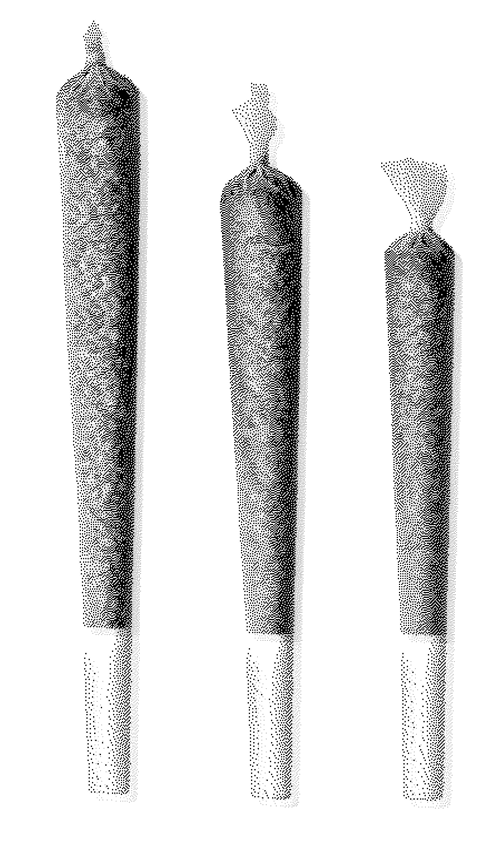

live
2
watchers with you
PRIME
18:45 · FR · 09 JAN
██▓███ ██▀███ ██▓ ███▄ ▄███▓▓█████
▓██░ ██▒▓██ ▒ ██▒▓██▒▓██▒▀█▀ ██▒▓█ ▀
▓██░ ██▓▒▓██ ░▄█ ▒▒██▒▓██ ▓██░▒███
▒██▄█▓▒ ▒▒██▀▀█▄ ░██░▒██ ▒██ ▒▓█ ▄
▒██▒ ░ ░░██▓ ▒██▒░██░▒██▒ ░██▒░▒████▒
▒▓▒░ ░ ░░ ▒▓ ░▒▓░░▓ ░ ▒░ ░ ░░░ ▒░ ░
░▒ ░ ░▒ ░ ▒░ ▒ ░░ ░ ░ ░ ░ ░
░░ ░░ ░ ▒ ░░ ░ ░
░ ░ ░ ░ ░